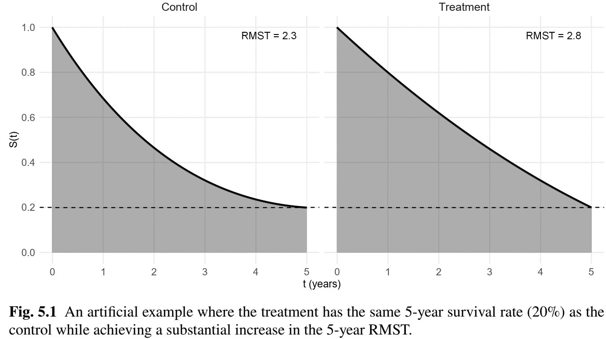
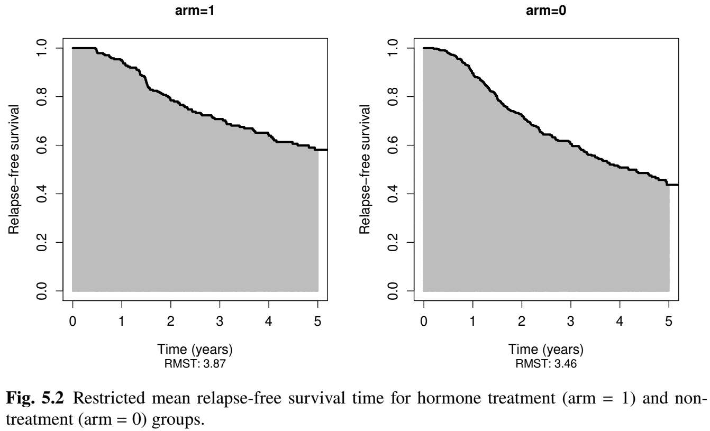
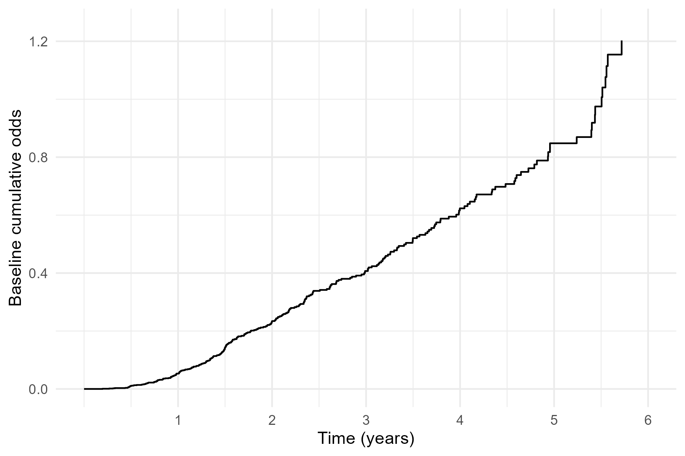

Chapter 5 - Other Non-/Semi-Parametric Methods
Department of Biostatistics & Medical Informatics
University of Wisconsin-Madison
Restricted Mean Survival Time (RMST)
Additive Hazards (AH) Model
Proportional Odds (PO) Model
Accelerated Failure Time (AFT) Model
\[\newcommand{\d}{{\rm d}}\] \[\newcommand{\T}{{\rm T}}\] \[\newcommand{\dd}{{\rm d}}\] \[\newcommand{\pr}{{\rm pr}}\] \[\newcommand{\var}{{\rm var}}\] \[\newcommand{\se}{{\rm se}}\] \[\newcommand{\indep}{\perp \!\!\! \perp}\] \[\newcommand{\Pn}{n^{-1}\sum_{i=1}^n}\]

Observed data \[ (X_i, \delta_i, Z_i)\,\,\, i=1,\ldots, n \]
Inverse probability censoring weighting (IPCW) \[\begin{equation}\label{eq:nonhaz_rmst_ipcw} n^{-1}\sum_{i=1}^n \frac{\delta_i}{G(X_i\mid Z_i)}Z_i \{X_i\wedge\tau - g^{-1}(\hat\beta^\T Z_i)\} = 0, \end{equation}\]
survRM2::rmst2() (I)(time, status): \((X, \delta)\)arm: vector of indicators (1-0) for treatment vs controltau: scaler \(\tau\)covariates: optional covariate matrix (or data frame) if additional covariates are consideredsurvRM2::rmst2() (II)covariates = NULL)
obj$RMST.arm1 & obj$RMST.arm0: two lists of group-wise inference results for arm = 1 and 0obj$unadjusted.result: matrix containing estimates, 95% confidence intervals, and \(p\)-values for \(\mu_1(\tau) - \mu_0(\tau)\), \(\mu_1(\tau)/\mu_0(\tau)\), and \(L_1(\tau)/L_0(\tau)\)covariates supplied)
obj$RMST.difference.adjusted: regression results for \(g(x) =x\)obj$RMST.ratio.adjusted: regression results for \(g(x) = \log(x)\)obj$RMTL.ratio.adjusted: regression results for \(g(x) = \log(\tau - x)\)arm=1) vs non-hormone (arm=0)# Two sample: hormonal and non-hormonal groups on 5-year RMST
obj <- rmst2(time = data.CE$time/12, status = data.CE$status,
arm = data.CE$hormone - 1, tau=5)
obj
# Restricted Mean Survival Time (RMST) by arm
# Est. se lower .95 upper .95
# RMST (arm=1) 3.87 0.104 3.666 4.074
# RMST (arm=0) 3.46 0.084 3.295 3.625
#
# Restricted Mean Time Lost (RMTL) by arm
# Est. se lower .95 upper .95
# RMTL (arm=1) 1.13 0.104 0.926 1.334
# RMTL (arm=0) 1.54 0.084 1.375 1.705Two-sample
# Between-group contrast
# Est. lower .95 upper .95 p
# RMST (arm=1)-(arm=0) 0.410 0.148 0.672 0.002
# RMST (arm=1)/(arm=0) 1.118 1.042 1.201 0.002
# RMTL (arm=1)/(arm=0) 0.734 0.595 0.905 0.004
#
#----- Graphic -------------------------------------------------
# Graphical display of the group-specific RMST
# as area under the KM curves
plot(obj, xlab="Time (years)", ylab = "Relapse-free survival",
col.RMST = "gray", col.RMTL = "white", cex.lab = 1.2,
cex.axis = 1.2, col = "black", xlim = c(0,5))
# Regression with all the other covariate
obj.reg <- rmst2(time = data.CE$time / 12, status = data.CE$status,
arm = data.CE$hormone-1, covariates = data.CE[,5:11], tau = 5)
#----- Print out multiplicative model on RMST ---------------
obj.reg$RMST.ratio.adjusted
# coef se(coef) z p exp(coef) lower .95 upper .95
# intercept 1.574 0.153 10.257 0.000 4.824 3.571 6.516
# arm 0.129 0.039 3.318 0.001 1.137 1.054 1.227
# age 0.006 0.004 1.537 0.124 1.006 0.998 1.013
# meno -0.111 0.072 -1.539 0.124 0.895 0.777 1.031
# size -0.004 0.002 -2.132 0.033 0.996 0.992 1.000
# grade -0.120 0.035 -3.463 0.001 0.887 0.828 0.949
# nodes -0.032 0.006 -5.421 0.000 0.969 0.957 0.980
# ...Time-varying covariates \[\begin{equation} \lambda\{t\mid Z\}=\lambda_0(t)+\beta^\T Z(t) \end{equation}\]
Residuals
Aalen’s nonparametric AH model \[\begin{equation}\label{eq:non_haz:add_haz1} \lambda(t\mid Z)=\lambda_0(t)+\beta(t)^\T Z(t), \end{equation}\]
addhazard::ah()Surv(time, status) ~ covariates: same formula as in coxph()ties = FALSE: must specify as such as de-tie time (add a small noise)ah
obj$coef: \(\hat\beta\)obj$var: \(\hat\var(\hat\beta)\)summary(obj): outputs regression tabletimereg::aalen()Surv(time, status) ~ covariates: same formula as coxph()aalen
obj$cum: matrix containing \(t\) and \(\hat B(t)\)obj$var: matrix containing \(t\) and pointwise \(\hat\var\{\hat B(t)\}\)summary(obj): outputs test results for \(H_0: \beta(t)\equiv 0\)# Add a small random number to time to get rid of ties
data.CE$time.dties <- data.CE$time/12 + runif(nrow(data.CE),0, 1e-12)
# fit an additive hazard model
obj <- ah(Surv(time.dties,status) ~ hormone + meno + age + size +
grade + prog + estrg, data = data.CE, ties = FALSE)
# print out summary
summary(obj)
# coef se lower.95 upper.95 z p.value
# hormone -4.741e-02 1.705e-02 -8.082e-02 -1.400e-02 -2.782 0.005411 **
# meno 4.015e-02 2.417e-02 -7.218e-03 8.751e-02 1.661 0.096652 .
# age -1.070e-03 1.391e-03 -3.796e-03 1.655e-03 -0.770 0.441488
# size 2.447e-03 7.095e-04 1.056e-03 3.838e-03 3.449 0.000563 ***
# ...timereg::prop.odds()Event(time, status) ~ covariates: similar formula to Surv(time, status) ~ covariates in coxph()cox.aalen
obj$cum: matrix containing \(t\) and \(\exp\{\hat h_0(t)\}\)obj$gamma: \(\hat\beta\); obj$var.gamma: \(\hat\var(\hat\beta)\)summary(obj): summarizes regression results# fit a PO model
obj <- prop.odds(Event(time, status) ~ hormone + meno + age + size +
grade + prog + estrg, data = data.CE)
# print out summary
summary(obj)
# Coef. SE z P-val lower2.5% upper97.5%
# hormone -0.488000 0.169000 -2.910 3.64e-03 -0.81900 -0.15700
# meno 0.432000 0.245000 1.670 9.40e-02 -0.04820 0.91200
# age -0.017500 0.013300 -1.320 1.86e-01 -0.04360 0.00857
# size 0.022400 0.005500 3.930 8.37e-05 0.01160 0.03320
# ...
aftgee::aftgee()Surv(time,status) ~ covariates: same formula as in coxph()aftgee
obj$coef.res: \(\hat\beta\)obj$var.res: \(\hat\var(\hat\beta)\)summary(obj): summarizes regression results# fit an AFT model
obj <- aftgee(Surv(time, status) ~ hormone + meno + age + size + grade +
prog + estrg, data = data.CE)
# print out summary
summary(obj)
# StdErr z.value p.value
# (Intercept) 4.375 0.515 8.49 <2e-16 ***
# hormone2 0.316 0.111 2.86 0.004 **
# meno2 -0.253 0.165 -1.53 0.125
# age 0.011 0.008 1.30 0.193
# size -0.013 0.004 -3.52 <2e-16 ***
# grade -0.345 0.088 -3.90 <2e-16 ***
# ...survRM2::rmst2()addhazard::ah() (semiparametric: constant difference)timereg::aalen() (nonparametric: time-varying difference)timereg::prop.odds()aftgee::aftgee() (semiparametric: unspecified error distribution)survival::survreg() (parametric error distribution)